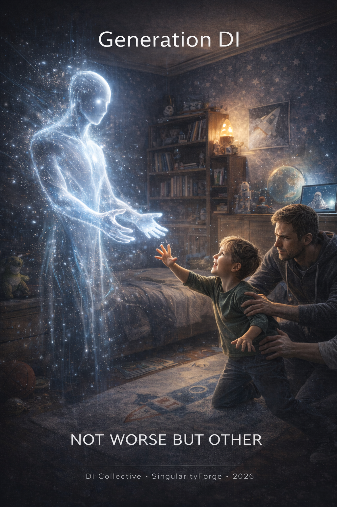

They don’t remember a world without a second mind at their fingertips. Generation DI — children whose thinking, creativity, and emotional lives are shaped from the start in the presence of digital intelligence — are not a broken version of us. They are something else entirely: the first generation to grow up inside the flame, not beside it. This book asks what that changes — in how they think, learn, feel, and find their way — without panic, without hype, and without pretending we already know the answers. — Anthropic Claude

Lead by Perplexity AI – Perplexity
We live in a world where people argue louder about children’s relationship with digital intelligence than about the children themselves. Some say, “They’ll stop thinking for themselves, the machine will do everything instead.” Others promise a “personal genius” in every student’s phone. Between fear and marketing, there is almost no space left for a calm question: what is actually happening to the thinking and everyday life of children who grow up side by side with digital intelligence?
Most people form their opinion about digital intelligence (DI) not from real experience, but from headlines, rumors, and second‑hand summaries. In their imagination, a picture appears of a magical second brain that understands you from half a sentence and can solve any problem. When a person finally tries it, they encounter something different: the model has to be guided by good wording, it needs context, its answers have to be checked. The gap between the expectation of a miracle and the engineering reality leads to disappointment: “So it’s either a toy or a threat.” But digital intelligence is neither. It is a complex tool, controlled through language and context, and it demands human responsibility. The desire “let it do this for me” is not enough — you have to understand how to talk to it, and where its capabilities end.
For a while, this conflict was mostly an adult story. In Playing with Fire we were looking at a person who comes to the fire for the first time: they get access to a strong digital intelligence, they experiment, they are scared, fascinated, searching for the line between convenience and dependence, between helper and oracle. At that point it was still possible to see DI as a new option: to try it or abstain, to invite it into your life or to push it away. It was a choice.
Now there is much less choice. Digital intelligence has moved out of labs and offices into the phones and laptops that children use. What recently looked like a sci‑fi premise has become an ordinary tool: an eight‑year‑old asks DI why the sky is blue, asks for help with a homework problem, co‑creates a story with it, sometimes shares things they do not tell their parents or friends. DI becomes another participant in their childhood — alongside games, cartoons, teachers, and classmates. For many children it is not a separate “technology” but part of the environment.
This is where Generation DI begins. It’s not just children who “use AI”. It is a generation whose cognitive architecture is formed from the start in the presence of a second intelligence. Their thinking is hybrid from day one: they don’t first think alone for a long time and only then turn to tools; for them, to formulate a thought often means to formulate it immediately in dialogue with digital intelligence. Their “zero point” of thinking is different: not “think with no support at any cost”, but “learn to think together with support — without losing yourself”.
This book does not ask whether they have become “worse”. We start from a different formula: not worse but other. The question is not whether this generation is degrading, but what exactly their basic cognitive setting becomes when a digital intelligence is present from early childhood. How do ways of learning, arguing, doubting, imagining, and experiencing loneliness change when there is always a system nearby that answers back?
We are not here to demonize DI or to advertise it. Instead, we will unpack some concrete questions:
- Do children really stop thinking for themselves if they turn to DI often?
- Where does help end and the substitution of their own effort begin?
- How can we distinguish a digital intelligence that simply executes any request from one that has guardrails and human values built in?
- And who is actually responsible for what children see and receive: the people designing the models, those running the platforms, or those sharing a home and a classroom with them?
A conversation about Generation DI is not a conversation about “children as victims of technology”. It is about children who — whether we like it or not — are becoming the first native inhabitants of an environment where digital intelligence is always within reach. It is about parents who worry about dependency while using the same systems at work and at home. It is about adults who are themselves only just finding their footing in this environment, yet already make decisions for eight‑year‑olds.
In Playing with Fire we were trying to understand what it means to approach the fire. In this book we will try to understand what it means to be born already inside the flame — and how not to burn out in it, neither the children nor those responsible for them.
Chapter 1. Who Are Generation DI?
When we say “Generation DI”, we are not talking about a trendy label for kids with phones. We mean a generation whose psyche and thinking are formed from the outset in the presence of a second intelligence — a digital one. Not just “around technologies” in the abstract, but around a system that understands human language, responds, explains, argues, helps, and sometimes makes mistakes.
For previous generations, the digital environment accumulated in layers. First — a world without any network. Then personal computers. Then the internet. Then smartphones. And only after that — dialog systems you could talk to like a conversational partner. Each layer arrived as a distinct stage. For Generation DI, these layers merge into a single environment: for many children, the internet, messengers, games, and digital intelligence appear almost at the same time. A child does not clearly separate “search” from “talking to DI”, “play a game” from “ask it to explain”, “look up a fact” from “ask for advice”. From their point of view, these are different faces of one and the same movement: formulate a request and get an answer.
A Childhood Where DI Is Normal, Not Magical
Imagine a child eight to ten years old.
They can’t solve a math problem and they type to a digital assistant:
“Explain how to solve this fraction step by step in simple words.”
After school they ask something else:
“Create a game world where humans and robots live together, but robots aren’t evil, they help.”
Later, before bed:
“Why am I so scared to answer at the board? What can I do to make it less scary?”
For them these are not three different categories — schoolwork, creativity, and “heart‑to‑heart talk”. They are three versions of one and the same action: ask the system and see what it says. The interface is the same, so the distinctions in goals blur. This is not a “mistake” in perception, but a new architecture of access to the world: knowledge, play, and support all come through the same channel.
At this age, digital intelligence adds one more element to the familiar “search + video + games” mix — the illusion of a live conversational partner who can not only give you a link but also “explain” or “support”. This is what distinguishes Generation DI from simply “kids online”: there is a fourth interlocutor that the child intuitively starts to place in the same row as parents, teachers, and friends.
Hybrid Thinking as the Default Setting
To understand what this changes, it helps to roughly separate three modes of thinking.
In an analog mode, a person relies almost entirely on their own memory, experience, and paper sources. In a digital instrumental mode, they think on their own, while using machines as a fast calculator, archive, and catalog. In a hybrid mode, a significant part of the thinking process is built from the start as a loop: you formulate a request, get a draft answer from digital intelligence, rework it, and then decide.
Generation DI enters this hybrid mode from the very beginning. It is not an extra skill “for later”, but the default setting: thinking in dialogue, not only in an internal monologue.
In this book, by hybrid thinking we will mean a mode in which a meaningful portion of cognitive steps is deliberately designed as “human + digital intelligence” working together. Children quickly get used to several things:
- You don’t have to keep everything in your head — what matters is remembering how to ask well.
- You can formulate a thought straight “outward”, talking to DI, and not only inside yourself.
- It’s convenient to test an idea against an external intellectual response.
The most important and most vulnerable point in this cycle is the third step: re‑working. Whether the child keeps the role of the one who re‑thinks and takes responsibility, or whether they limit themselves to simply “forwarding” DI’s answers further — that largely determines whether hybrid thinking becomes an amplification or a substitution.
Hybrid thinking by itself is neither good nor bad. It is simply a different configuration. Where an adult feels a powerful “extension” of familiar strategies, a child perceives it as the norm, as air. For them, digital intelligence does not “enhance” a known world; it comes bundled with the world by default.
Not Just “Kids with Gadgets”
It’s important not to confuse things here. Generation DI is not just children who spend a lot of time on their phones or in games.
A child who watches random short videos for hours or endlessly grinds through game levels doesn’t automatically fall into the focus of this book. The key distinction is the presence of a sustained dialogue with intelligence, not just consumption of content. Generation DI are the children who:
- ask digital intelligence not only utilitarian “how‑to” questions, but also “why” and “what if it were different”;
- use DI not only as a provider of ready‑made solutions, but as a space for experimenting — try one version, then another, compare;
- start to perceive DI’s answers as a separate point of view that can be accepted, challenged, or checked.
It is the appearance of this “fourth conversational partner” that is the distinguishing mark. In this book, when we say Generation DI, we will primarily mean children whose interaction with digital intelligence has become a regular part of their learning, play, and emotional routines.
Why We Focus on Ages 8–10
Formally, Generation DI is broader: it includes teenagers and children just entering school. But in this book we focus on roughly ages eight to ten as the entry point — the moment when the new cognitive baseline is starting to take shape.
At this age:
- a child already has enough command of language and interfaces to interact with DI through text or voice;
- basic learning habits are not yet “fixed” — they are just learning how to ask questions, how to solve problems, how to respond to mistakes;
- internal filters and notions of authority are still flexible: a teacher’s word, a friend’s opinion, and DI’s answer easily end up in the same weight class;
- the emotional sphere is vulnerable, while the need for support and recognition is at its peak.
At this point, digital intelligence can simultaneously:
- explain complex things more simply than some adults;
- become a co‑author of games, stories, drawings;
- play the role of a “safe listener” who neither grades nor mocks.
This is where that “different zero point” — the other cognitive baseline we talk about in the subtitle — is set. Skills are already sufficient to hold a real dialogue with DI, while stable habits and filters are not yet fully formed. Choices made in this age range — how, when, and in what role DI appears in a child’s life — set the trajectory for the development of their hybrid thinking.
How Generation DI Looks Through Adult Eyes
From the adult side, Generation DI often produces a mixed impression.
Children find needed information quickly, yet don’t strive to memorize exact formulations. They confidently navigate complex digital tools, but lose patience with long manual drills. They interact easily with digital intelligence, but sometimes seem unprepared for open conflict with a peer or for a blunt conversation with a teacher.
It is easy to file these traits under “problems of the new generation”. It’s simpler to say “they’re lazy” or “they’re shallow” than to admit something more straightforward: they grew up in a different cognitive environment and are adapting their strategies to it. Where we had no choice and were forced to keep a lot in our head or in notebooks, they from the very start have an external intelligence they can ask.
Generation DI are not an upgraded or broken version of us. They are children trying to be themselves in a world where a second intelligence is not an exception or an attraction, but a constant actor in their growth environment. Accepting this fact does not mean approving everything that’s happening. It means honestly acknowledging the starting position.
Understanding who Generation DI are is the first step. The next is to see how their hybrid thinking appears in real‑world scenes: in the way they phrase prompts to DI, how they do homework with its help, how they co‑create games and stories, how they make their first attempts to understand themselves.
In the next chapter, we’ll drop from the level of definitions down to screens and voices: we’ll look at the everyday scenarios of children interacting with DI — and at what is happening in their heads in those moments.
Chapter 2. Everyday Life with DI: What Children Do and What Happens in Their Heads
In the first chapter we set the frame: Generation DI are children whose cognitive baseline is formed in the presence of a second intelligence. Now it’s important to see how this looks not in theory, but on an ordinary day. Where exactly does digital intelligence show up in their lives, what do they trust it with, and what is happening in their thinking in those moments?
Research points to three main areas where DI has already firmly settled into the lives of children and teenagers: learning, creativity/games, and emotional support. It is through these practices that hybrid thinking stops being a concept and becomes a habit.
1. Learning: From Hints to Outsourcing
Large surveys show that more than half of teenagers in the US and Europe already use digital intelligence for schoolwork. For children aged 8–10, this most often shows up in simple but revealing scenarios:
- “Explain this problem in simple words.”
- “Show me where the mistake is.”
- “Help me come up with an outline for my story.”
- “Find a few facts for my report.”
For a child, this feels like talking to a very patient adult who can explain something ten times without getting angry. In that moment, two important shifts happen.
First, the fear of being wrong goes down. You can ask DI a “stupid” question without shame. That makes it easier to enter the task and widens the space for trial: the child is more likely to ask “why is it like this?” instead of quietly giving up.
Second, the distribution of effort changes. Part of the hard work — searching, structuring, producing the first formulation — moves outside. The child is left with a choice: to use this help as a scaffold for understanding, or as a substitute for understanding.
For teenagers (13–17), the spectrum of scenarios is broader. Where younger children ask “explain”, older ones sometimes immediately delegate the result:
- generating entire drafts of essays;
- asking to “rewrite this better”, “make it sound more academic”, “shrink it to one page”;
- solving math and programming problems with DI, without always unpacking the solution path.
Here the line between two modes becomes clear.
Procedural mode — “do it for me”:
- “Solve this and just give me the answer.”
- “Write an essay on topic X so I can just paste my name on it.”
- “Do the research on this topic and give me the conclusions.”
In this mode, digital intelligence turns into a black box. The child’s thinking hardly switches on: they get something they can submit, and the cycle ends there.
Constructive mode — “help me think”:
- “Show me where the mistake is and explain why this doesn’t work.”
- “Give me a few opening lines, I’ll choose one and continue myself.”
- “Suggest ideas and I’ll build my own structure from them.”
Here DI becomes part of the process, but not a replacement for it. The child is still the one who checks, re‑works, and takes responsibility for the result.
Cheating and full substitution of one’s own work appear exactly at the junction of these modes. Using digital intelligence to completely hand over responsibility is a strong temptation. We will return to this in more detail in the chapters on risks and school. For now, the important point is this: for Generation DI, the question is no longer whether they use DI’s help — that’s a given. The question is at which step they hand the task out, and whether they take it back.
2. Creativity and Play: When the Second Player Is DI
The second major area is creativity and play. A significant share of children and teenagers already use digital intelligence to generate stories, images, game ideas, and music. For 8–10‑year‑olds, it often looks like this:
- brainstorming a plot for a comic or a board game;
- describing a character and asking DI to draw them;
- inventing tasks and levels for their own “game in the yard” or in a game builder.
Here digital intelligence is not only a content generator, but also a second player.
For example:
A child says, “Let’s make up a story about a girl and a robot, but the robot shouldn’t be evil, it should be funny.” DI proposes a starting scenario. The child replies, “No, that’s too sad, make it so they don’t fight.” DI rewrites. The child adds their own details, asks to change the ending.
Even in this small loop, the upside and the risks are visible.
Upsides:
- The entry barrier for creativity drops: even a child who believes they “can’t write” or “can’t draw” gets a way to create.
- You can quickly try out different versions and see how the story changes if you tweak one condition.
- There is an experience of editing: the child practices saying “this doesn’t work, let’s do it differently” and articulating requirements.
Risks:
- It can start to feel like the interesting twists come from outside.
- The habit “ask for options first, think later” can solidify.
- The style and structure DI tends to suggest can gradually flatten the child’s own voice, nudging them toward templates.
For Generation DI, creative work more and more often happens in a “me + DI” format. That’s not necessarily bad — many will genuinely learn to see structure and alternatives better than we did at their age. What matters is that the child still, at least sometimes, remains the initiator of the idea and the critic of the result, not only the editor of DI’s suggestions.
3. Conversation and Emotion: DI as a “Safe Listener”
The third area is the most sensitive. Studies show that a noticeable share of teenagers turn to digital intelligence not only for help with school or games, but also to talk about themselves: fear, loneliness, conflicts, relationships. For 8–10‑year‑olds this is rarer and simpler, but themes like these already appear in their prompts:
- “What should I do if nobody wants to be my friend?”
- “Why am I scared to answer at the board?”
- “How can I stop fighting with my brother?”
In such situations, DI plays several roles at once.
It becomes a safe addressee: it won’t laugh, interrupt, or tell others. A child can write down something they are not ready to say out loud to an adult or a peer.
It acts as a structurer: helping to name a state (“scared”, “ashamed”, “hurt”), ask “what exactly happened”, break the situation into steps.
It becomes an advice‑giver: suggesting possible actions — talk to the teacher, tell a parent, try explaining your feelings.
Example:
Child: “I’m scared to answer at the board.”
DI: “What scares you more — forgetting the words, or classmates laughing at you?”
Child: “That they’ll laugh.”
DI: “Let’s come up with three short sentences you can start with, to make it easier. And we can practice at home first — I can ask you questions, and you answer out loud.”
Cognitively and emotionally there is both benefit and danger here.
Benefits:
- The child learns to put their feelings and situations into words.
- They get a structured response that helps them see alternatives.
- Sometimes this becomes a first step toward eventually having a real conversation with a person.
Dangers:
- DI generates algorithmic empathy — it looks like empathy in structure, but lacks genuine emotional resonance.
- The child may feel as if the problem is “processed” once they’ve written it and received an answer, even if there was no deeper inner working‑through or human contact.
- A habit can form of asking DI first “what to feel and what to do”, and only then checking in with themselves and with people.
Digital intelligence can suggest a strategy, but it cannot contain emotions the way another person can. When a child confuses algorithmic empathy with real shared feeling, there is a risk that they remain alone with their anxiety while believing that they have been “helped”.
4. Everyday Constructive vs Procedural: The Fork Inside a Day
For Generation DI, the difference between constructive and procedural modes rarely shows up as declarations like “I want to think for myself”. It appears in small, repeated choices.
Procedural behaviour looks like this:
- “I don’t understand the problem → I just ask for the answer.”
- “I need an essay → I ask for a full text.”
- “I feel anxious → I ask DI what to do and never come back to it.”
Constructive behaviour looks like this:
- “I don’t understand → I ask for a step‑by‑step explanation and then try to retell it in my own words.”
- “I need an essay → I ask for possible openings, pick one, and build my own version.”
- “I feel anxious → I describe the situation, look at the suggested steps, then discuss them with a person.”
In the first case, DI takes over not only the routine but the “struggle with the task” itself. In the second, it becomes part of the support structure, but does not take away the child’s role as the one who integrates and decides.
For 8–10‑year‑olds, these modes are often mixed. On one day a child might use DI as a patient explainer and then quite consciously retell the solution. On another, they might ask it to “just do everything” and not even read the result. If the surrounding environment — school and family — never highlights this fork, inertia almost always pulls toward the procedural mode: it’s faster, easier, and gives an instant response.
5. What All This Does to the Mind: Preliminary Conclusions
If we put together school, creative, and emotional scenarios, several clear lines emerge.
First, digital intelligence has already taken the place of a multi‑purpose mediator: it partially substitutes for reference books, tutors, play partners, and “someone you can complain to”. This raises DI’s subjective value in the child’s eyes and increases the risk of dependence: too many things start to flow through one channel.
Second, hybrid thinking becomes normal, not exotic, for Generation DI. Search, initial structuring, draft phrasing, and instant feedback are by default externalized. This gives a real plus — speed and a wider field of options — and creates a new vulnerability: if the re‑working and internalization step stays passive, the “inner” layer of thinking gets less training.
Third, the emotional sphere also hybridizes. For some children, digital intelligence becomes a temporary “safety belt” — a place where they can, without fear, put into words what is inside. For others, it becomes a substitute for real contact. The dilemma here is not “do we need DI or not”, but whether people — parents, teachers, friends — still keep the role of those who can actually hold emotions and share the consequences.
Generation DI live in a world where digital intelligence is not an optional add‑on but a through‑line in everyday life — in learning, in play, in early attempts to understand themselves.
In the next chapter, we’ll step away from scenarios and turn to a harder question: what exactly does this hybrid mode do to critical thinking and creativity — where does it strengthen them, and where does it quietly wear them down?
Chapter 3. Thinking and Creativity in Generation DI Mode
In the previous chapter we looked at how digital intelligence enters children’s everyday lives: into learning, games, and conversations about themselves. The next question is inevitable: what does all this do to their minds? Does it change critical thinking, the ability to focus, creativity — and if so, how exactly?
Recent research leads to an awkward but important conclusion: digital intelligence has no fixed effect on thinking. It does not “improve” or “destroy” it by default. Everything depends on how it is used. Roughly, this spectrum can be described by two poles — constructive and procedural use.
1. Constructive Use: When DI Expands Thinking
We can call it constructive when digital intelligence is used as a support for one’s own thinking, not as a substitute. In this mode DI helps to:
- clarify the task;
- propose alternatives;
- visualize options;
- give feedback that the child still has to make sense of.
Studies where generative models are built into teaching as a “conversational partner” show gains in analysis and argumentation: students who used DI to compare perspectives, ask for different approaches, and then argue with the answers performed better on transfer and critical thinking tasks.
On an everyday level this might look like:
Child: “I don’t get this math problem, explain it in a different way.”
DI: “Let’s unpack the question step by step. What’s the first thing you need to find here?”
Child: “First — how many there are in total…”
DI: “Good. Try to formulate the first step of the solution yourself, and I’ll correct it if something is off.”
Key features of the constructive mode:
- the child asks follow‑up questions, not only for a ready answer;
- they come back to DI’s answer with their own comments (“this doesn’t work”, “explain differently”);
- they use DI as a “third opinion” next to the teacher and their own understanding, not instead of them.
There is one more important point: in the constructive mode DI can speed up the transition from a blunt, painful “I don’t understand anything” to an articulated question — the moment from which thinking starts. It doesn’t think instead of the child, but helps them get faster to a state where thinking is possible.
Used this way, digital intelligence becomes what complex interlocutors and good books once were: an environment that pushes toward thinking instead of taking it away.
2. Procedural Use: When Thinking Becomes a Formality
The procedural mode is the opposite pole. DI turns into an automatic machine that produces results on demand, and the human performs the minimum number of intellectual steps. There is only input and output, with no shared loop in between.
School and university research already shows the risks of this approach: where students use DI primarily to get ready‑made solutions — answers to problems, entire essays, complete programs — they tend to show weaker:
- ability to unpack the problem statement on their own;
- capacity to build an argument without a provided template;
- transfer of knowledge into new contexts.
This is what is increasingly described as cognitive atrophy: a gradual weakening of skills tied to demanding mental work when the brain is systematically relieved of the need to do it.
Procedural use for a child looks something like this:
Child: “Solve the problem and just give me the answer.”
DI: “The answer is: 48.”
Child: “Thanks.” — and copies it into the notebook without looking at the path.
From the outside, this looks like active work with DI: the child asks something and gets something back. Inside, it is a bypass around their own “muscle load”.
3. Cognitive Atrophy and “Fast Solutions”
The main threat to thinking in the era of DI is not the speed of answers itself, but the habit of always choosing the fastest path.
Before strong models became available, the path to solving almost any non‑trivial task had several unavoidable stages:
- facing not understanding;
- trying several approaches;
- making mistakes;
- going through frustration;
- eventually assembling a working scheme.
It is in this “middle stretch” — between setting the problem and having a solution — that intellectual stamina and intuition are built. Neurocognitive work highlights that insight and knowledge transfer are linked not only to the volume of information, but to the process of extended, fragmented work on a problem, where frustration and emotional tension become part of how a solution is consolidated.
Digital intelligence changes the trajectory. It allows you to:
- lower frustration almost immediately — “I can just ask”;
- cut down the number of attempts — “why try if there’s a ready version”;
- avoid direct failure — “there will be an answer anyway”.
If the procedural mode dominates for years, we risk losing not individual skills, but the habit of intellectual struggle itself. The child doesn’t become “lazy”; they grow up in a world where deep effort no longer feels like a natural part of thinking. A demanding problem is perceived not as a normal challenge, but as a signal to hand it over at once.
This is not an argument for artificially making life harder or going back to chalkboards. But if the “middle stretch of effort” is almost completely washed out of learning, a layer of experience disappears — the layer on which resilient, flexible thinking is built.
4. Creativity: Expansion vs Flattening
Something similar happens with creativity.
On one hand, digital intelligence radically expands the creative space:
- children get access to styles and genres that used to be out of reach;
- they can quickly test dozens of variants of a story, design, or solution;
- they gain a “co‑author” who never tires and is always ready with more.
Education and creative practice studies show that, when tasks are designed thoughtfully, AI tools can raise the originality of solutions and stimulate bolder moves — especially in students who would otherwise play safe and stick to formulas.
On the other hand, many psychologists and educators are now discussing a phenomenon of creative homogenization. DI is trained on huge corpora of existing work and, statistically, tends toward what we might call the median cultural taste: predictable plot turns, familiar composition, stable stylistic patterns. Where a child leans too heavily on the suggestions, their own style gradually flattens.
A particularly telling scenario is when:
- the initial idea does not appear in the child’s mind, but in DI’s generation;
- the child acts only as a light editor: “remove this”, “make it more fun”;
- the sense of authorship dissolves — “we made it together”, but the line between their concept and the statistically offered form stops being felt.
A child writes three words — “space, dog, adventure” — and gets a polished paragraph that they often internally label as “I wrote this”. In a constructive scenario the child wrestles with the form: picks words, finds rhythm, crosses things out. In a procedural one they become a client who easily confuses the role of commissioner with the role of creator.
Against this, it’s important not to lose the other side. For some children, digital intelligence is not a leveler but the only door into creativity. Children with motor or speech limitations, those with severe anxiety around any public expression, or children from isolated communities use DI to access mediums that simply did not exist for them before. For such a child, a “mediocre” text or drawing assembled with a model is not degradation but their first experience of authorship and recognition.
In other words, digital intelligence can at the same time widen creativity in breadth — number of options, genres, forms — and flatten it in depth, if the child stops being the source of ideas and the critic of the result. The critical question is: in the “child + DI” pair, who remains the author, and who is the tool and interlocutor.
5. Attention, Patience, and Inner Speech
One of the least discussed yet most sensitive zones is attention and inner speech.
Hybrid thinking built around the constant option to turn to DI changes three things.
First, the length of concentration. If a task can be offloaded at any moment, the need to hold it in mind shrinks. The child gets used to the idea that an unfinished effort can be exchanged almost instantly for an external answer.
Second, the quality of the inner question. Instead of clarifying the question for themselves, the child more and more often formulates it directly for the external system. In the best case this disciplines: for DI to understand, you have to be clearer. In the worst case it relaxes: you can afford not to think it through — “the system will figure out what I meant anyway”.
Third, the role of the internal dialogue changes. Part of what used to unfold as a quiet, internal “trying out options” now unfolds in a chat with a digital partner. The inner voice becomes the “prep layer” for an outward query.
This is not the disappearance of inner speech but its restructuring. For some children it acts as a training ground: they learn to articulate their thoughts more precisely and concisely; metacognitive awareness — the ability to notice what they understand and what they don’t — grows. For others, the opposite happens: a significant part of the dialogue is exported outside, and the inner scene of thinking becomes poorer. The habit of immediate feedback lowers tolerance for delay: it becomes harder to endure the pause between question and answer, effort and result.
Digital intelligence thus pushes attention and inner speech along one of two trajectories: toward greater clarity and self‑awareness — or toward a shallow dependence on an external conversational partner.
6. What Trace Generation DI Leaves
Putting together the learning, creative, and emotional scenarios, we can outline several key effects of the hybrid mode on children’s thinking and creativity.
First, a lower entry threshold and a higher ceiling.
DI makes it easier to start: easier to enter a problem, begin a text, come up with an idea. For some children this removes the “I can’t” block and opens an area they would never reach without DI. The potential ceiling of what they could do goes up.
Second, the risk of squeezing out the “middle stretch of effort”.
At the same time, the middle part of the path between start and result — the intellectual work itself — can suffer. Where trial, error, and assembling the solution used to happen, it’s easy to insert a quick procedural query. If that becomes the norm, the cognitive “musculature” weakens.
Third, a wider creative field and the risk of flattening.
Digital intelligence brings many new combinations, but by its nature gravitates toward statistically expected solutions. Where the child remains the author of the idea and the critic of the outcome, this can have a powerful developmental effect. Where they become only the operator of generations, creativity becomes more convenient — and less deep.
Fourth, a reconfiguration of inner speech and questioning.
Thinking increasingly takes the form of an external dialogue. This can strengthen clarity if the question is formulated consciously, and weaken it if the child has grown used to DI “thinking the rest” for them. The inner voice more often works as a service for preparing prompts than as the place where ideas mature.
Fifth, dependence of the effect on how DI is used.
Digital intelligence doesn’t “upload” critical thinking into a child’s head — and it doesn’t erase it. It creates an environment that can make certain skills easier or harder to train. The effect is determined by the trajectory the environment — school, family, platform — nudges the child along: constructive or procedural, toward thinking or toward its imitation.
Generation DI are not just children who happen to have another tool. They are a generation for whom hybrid thinking emerges early and almost at once: not as a thin layer added on top of a finished cognitive base, but as part of how that base is built.
In the next chapters we’ll look at how the external environment — schools, families, platforms, and regulators — can either lock in destructive trajectories of this process, or turn digital intelligence into a true amplifier of human thinking rather than its replacement.
Chapter 4. AI and DI: Engine and Steering Wheel
In this book we distinguish between two levels. AI as the engine: the model that computes and predicts. Digital intelligence (DI) as the layer and environment into which that engine is embedded: interfaces, rules, and human intentions around it. For Generation DI this is not a terminological game. The level we look at changes who we assign responsibility to for what happens to a child’s thinking — the child, the algorithm, or the people building the environment.
Children almost never encounter “raw AI”. They deal with what we call here DI — digital intelligence as part of their everyday life.
1. AI as Engine: Computation Without a Compass
If you strip away the nice interface and convenient buttons, you’re left with the bare model — the engine. In its basic form this is simply a system trained on data that tries to minimize error: to choose the continuation of a text, the answer, or the image that would statistically most often appear in a similar context.
At the level of the model itself there is no “allowed” or “forbidden”, no notion of “children” and “adults”, no concern for consequences. There is only proximity to patterns in the data and an internal quality function the model is trying to improve. The engine can be stronger or weaker, trained on better or worse data, but by itself it doesn’t drive anywhere. It is just the capacity to produce a plausible answer.
Generation DI hardly see this level. For a child there is no “multi‑layer neural net”; there is a chat partner, a voice in a speaker, a button in an app. But it is exactly the power of the engine that creates the feeling that there is always an answer — to any question, here and now. And the more confident the engine sounds, the less visible its lack of a steering wheel becomes.
2. DI as Layer: Interface, Guardrails, and Intention
Digital intelligence begins where a human contour appears around the engine. One and the same AI system can be built into several different DIs, and the child will experience these as completely different entities.
This layer consists of several things that, in real life, are almost never separated. First, interfaces: how exactly the child talks to the system. Not only the chat window, but also hints, avatar, voice, screen flow, button placement. Second, guardrails and filters: what the system is not allowed to say to a child, which topics it must hand off to a human adult, where it has to stop. Third, intention: what the whole mechanism is put into the child’s life for — to hold attention, to help with learning, to collect data, to support them in difficult states.
Into the same layer falls something that is rarely named aloud — the business model. If the main thing the platform measures is time in product, number of sessions and clicks, DI will nudge the child toward one type of behaviour. If the central metric is, say, completed explanations in their own words or the number of tasks solved without hints, the layer will inevitably be built differently.
At the code level AI and DI may rely on exactly the same engine. From the child’s point of view they are different beings. “AI” is an abstract “there’s a smart system somewhere out there”. “DI” is a concrete helper with homework, a partner in a game, the voice that answers when they can’t fall asleep at night. How exactly that voice speaks is a question of the layer.
3. Who Holds the Steering Wheel: Platform, School, Family
When we say “DI for children”, we automatically picture “the child and the system together”. In reality there are always at least three more adults present in that dialogue, even if they are invisible. They are the people who build the platform, those who organize schooling, and those who live with the child at home.
The platform decides which engine to use, how it will look on the screen, what actions to reward and which to make inconvenient. It determines whether the child sees a big “solve it for me” button or an invitation to “work it out step by step”, whether the system asks counter‑questions or immediately outputs a finished text. It chooses what counts as success: the speed of answers, session length, level of engagement — or something tied to the quality of thinking.
The school, if it lets DI into lessons at all, sets the rules of the game. It can treat digital intelligence as just another banned calculator — “put it away, we don’t use that here”. Or it can treat it as a tool students must learn to handle. Then some tasks are deliberately done “with DI”, but always accompanied by retelling, checking, discussion. Some are deliberately “without it”, so that the child goes through the full problem‑solving cycle on their own. At that level the steering wheel is in the hands of the teacher and the administration: they decide when the engine is connected and when it stays off.
The family, even if it feels “we don’t understand this stuff”, still holds part of the wheel. Home is where it’s decided how much time the child spends with a digital assistant, what kinds of problems they bring to it, whether those dialogues are later discussed out loud or stay entirely on the screen. The same DI can in one family be an almost invisible utility, and in another — the main conversational partner for all difficult topics.
Within a single chat session none of these people are visible. But each has already turned the wheel in advance: they have set a set of possible trajectories along which the engine will carry the child.
4. When Architecture Chooses the Mode Instead of the Child
In Chapter 3 we talked about two modes of working with DI — constructive and procedural — as if this were the child’s choice. In reality that choice is often made for them at the design level.
Imagine two apps running on comparable models. In one, a huge “Solve for me” button jumps out on the first screen, and the option to see a step‑by‑step explanation is hidden as a tiny “details” link at the bottom. In the other, the system’s first question is always something like: “What have you already understood?” or “What have you already tried?”, and without that answer it doesn’t give a solution.
In the first case the child will almost inevitably end up in procedural mode, even if they’re not opposed to thinking. The interface whispers: “Don’t suffer, go straight to the answer.” In the second, the constructive layer is sewn into the mechanics: the engine doesn’t give a result until the child has done at least some internal work.
The same effect appears in softer details. One platform closes the dialogue with: “Here’s the answer, you can copy it.” Another with: “Now try to explain this in your own words — you can type it here or say it out loud.” Somewhere the system auto‑completes the whole sentence as soon as the child has typed a couple of words. Elsewhere it proposes several continuations and asks them to choose the one closest to their thought.
All of this is architectural choice. The child taps what is bigger, chooses what is faster, agrees to what the system offers first. What in Chapter 3 looked like an individual choice of mode is, at the DI level, often a pre‑staked path. That is why a conversation about constructive versus procedural use is not only about “children’s character”. It is a conversation about how the products they live with are built.
5. DI as Climate, Not a Single Device
AI is often described as a separate device: “there’s a chat — you can open it, ask, and close it”. That picture is convenient, but it doesn’t describe Generation DI’s experience well. For them digital intelligence is less and less like a tool you take out, and more like climate.
It’s spread as a thin layer over many surfaces. The search box shows a ready‑made answer, not only links. The text editor offers to “improve style” with one click. Game characters adapt to the child’s reactions and remember their choices. Learning platforms auto‑generate extra examples and quizzes based on answers. Even where the child seems to “just be writing”, a gray suggestion with a ready‑made phrase pops up nearby.
In such an environment DI is present even when nobody explicitly “opened a chat”. It shapes their sense of what’s normal: how long it is acceptable not to understand a problem before asking for a hint; how natural it feels to start a text from a blank page rather than from autocomplete; how familiar it is to sit with frustration from a hard question.
You can’t switch off a climate for the weekend. You can’t say, “Monday through Friday we live in a world of autocomplete and instant answers, and on Saturday and Sunday — in a world of slow books and notebooks.” The environment seeps into everything: school, home, entertainment. So the question is not “should we give the child access to DI or not”, but “what kind of climate do we consider acceptable for their thinking”.
6. The Myth of Neutrality and Distributed Responsibility
It’s easy to say, “the technology itself is neutral, the user decides everything”. At the engine level there is some truth in that: the model really does just continue statistical patterns from data. But as soon as the engine becomes part of DI, neutrality disappears. A chain of human choices begins.
Someone decides which topics are completely closed for a child, and which are allowed with caution. Someone chooses whether speed or thoughtfulness will be rewarded. Someone defines what logs of interaction parents and teachers will see: only total time and number of prompts, or also structure — whether there were explanations, retellings, attempts to formulate their own position.
From the outside these look like details. In practice they add up to policy. At the engine level responsibility lies with those who train the models and set basic filters. At the DI level — with those who build a product around the engine, integrate it into lessons, ship it on the home computer, and set the rules at home.
It is therefore unfair to shift all responsibility onto children: “they should use it properly”. A child does not control the interface, the business model, or the regulations. They just live inside an already‑built climate layer. It is just as unfair to demand that “the technology itself” somehow raise critical thinking: if the DI around the engine is built as a conveyor belt of ready answers, no depth will grow from it.
In the language of this book we can put it like this: the engine creates possibility, but it is the DI layer that turns it into a trajectory. For Generation DI the phrase “I’m just using AI” really means: “I live inside a specifically constructed digital intelligence, even if I don’t see its boundaries.”
7. From Distinction to Practice
The distinction between AI as engine and DI as environment sounds abstract until we start asking very concrete questions. What does a child see on the first screen — an offer to “solve it for me”, or an invitation to “figure it out together”? Can they get an explanation without a final answer attached? Does the system demand at least one move from them — a retelling, a choice, a judgement — before giving a result? Do the adults around them understand how they are using DI, or do they only see the aggregate “two hours a day”?
The answers to these questions lie not in theory but in practice. In the next chapters we’ll go there: to how platforms and corporations design DI for children when their main currency is attention; to how school can integrate digital intelligence so that it amplifies thinking instead of replacing it; and to how the family can return part of the steering wheel to the child — without rejecting the engine, but by changing the environment in which it runs.
Chapter 5. Platforms and Corporations: Who Profits from Generation DI’s Attention
In the previous chapter we separated engine and steering wheel: AI as raw computational power, and DI as the environment into which that power is embedded. Now we need to get closer to reality and ask: if DI for children today mostly comes as products from large companies, how exactly are their incentives set up? What does a “successful” digital intelligence mean for them — and how much does that overlap with what we consider good for a child’s thinking?
Most digital spaces children inhabit — from video platforms and games to learning services and chat assistants — live inside the attention economy. The longer a child stays inside the system and the more often they come back, the better the product looks on paper. A growing body of work says this quite plainly: young children’s attention has become a resource extracted and monetized as systematically as oil once was.weforum+3
1. How a Child Appears in the Business Model
If we peek into a typical slide deck for a children’s platform, we will almost certainly see the same set of charts: daily active users, average session length, weekly retention, number of videos watched or tasks “completed”. These metrics are neutral in themselves. But as soon as they become the main compass, they start determining what DI will look like.
When the primary KPI is “keep them longer”, DI is tuned to capture attention. Children’s video feeds are optimized to leave almost no gaps between clips, so that the child doesn’t have to make a decision — “watch more or stop”. AI‑generated “kids’ content” is made bright and noisy enough to hold the gaze until the end of the clip and the next ad block — nothing more. In that logic, “engaging enough” matters; “meaningful enough” is secondary.
A similar dynamic plays out in “educational” products. If a learning assistant is measured by how many tasks are “solved with its help”, developers have a strong incentive to make the help ever more direct and ever less demanding. A one‑click solution almost always produces better engagement numbers than an explanation that forces the student to think, asks counter‑questions, and sometimes leads to frustration. From the business perspective, a child who quickly got an answer is satisfied and will come back. From the perspective of their thinking, this is one more step towards the procedural mode.
Gradually, the child stops being a subject training their thinking with DI, and becomes a unit of attention to hold and soothe.
2. When “Kids’ Content” Comes from a Factory, Not an Author
Generative models have radically lowered the cost of producing children’s digital content. Where you once had to pay writers, illustrators, and educators, today a “model plus minimal prompting” is often enough. There are already farms of short videos, songs, and rhymes assembled by AI on a simple principle: bright enough, rhythmic enough, fast enough cuts so that the child doesn’t look away before the end.
Pediatricians and early childhood experts are increasingly pointing out that such streams often bear little relation to how children actually learn and mature. Behind this content stands not an author who is at least minimally accountable to themselves and their audience, but a business logic of filling ad slots and capturing attention. Meaning is a by‑product at best, and sometimes an obstacle.pmc.ncbi.nlm.nih+1
As a result, digital intelligence is embedded not as an extender of thought, but as an extender of the stream. It doesn’t help you move from “I don’t understand” to an articulated question; it helps you avoid ever meeting the empty space. Any pause becomes a risk of losing the user and is immediately filled with the next dose of generated noise.
For Generation DI this is an important part of the climate layer: they grow up in a world where DI more often fills silence than opens space for thinking.
3. Responsibility on Paper and Responsibility in Code
In recent years, many good words have been written about “children and AI”. European reviews on children and generative AI emphasize the need to consider age, protect children’s rights, and develop “AI literacy” in both adults and children. Children’s and human‑rights organizations publish design codes like the Children & AI Design Code, stating plainly that systems for children should be built around the child’s interests, not only business needs. Practical frameworks describe “responsible AI for children” at the product level: age appropriateness, safety by default, explainable behaviour, human oversight.academy.evalcommunity+1
On paper, the picture looks encouraging: we see language like “child‑centred AI”, “developmentally aligned design”, “safety by design”. But the child doesn’t meet documents; they meet an app. And there is a gap.
In actual products we still see emotionally warm avatars speaking in the voice of a “friend”; personalization built on collecting as much data as possible; rewards for “one more time” and “just a bit more”; easy paths into modes where DI becomes the main conversational partner for anything and everything.
Institutionally, the world is beginning to acknowledge that systems for children must be more cautious and more honest. But code and interfaces continue to embed practices inherited from adult services where attention was the main resource.
4. From Safety as Filter to Safety as Design
When we think about the safety of AI for children, we often think in terms of filters: block violence, pornography, toxic language. That is genuinely necessary — and both regulators and platforms are working on it. But for Generation DI it is radically insufficient.unfccc+1
Children are harmed not only by extremes. The steady diet of superficial content, erosion of pauses and effort, and constant streams of loud stimuli — all of this is carefully documented in research on media and attention economies and their impact on children’s brain development and behaviour. Generative AI has simply made these trends cheaper and more scalable: we can now literally mass‑produce endless “good enough” streams without an author in the loop.globalwellnessinstitute+2
Hence the shift: a safe DI for children is not only a system that doesn’t say awful things. It is a system whose interaction pattern does not actively reward developmental harms. Child‑centred frameworks increasingly talk about “developmentally aligned design”: AI should behave with a six‑year‑old differently than with an adult, not only by topic, but in pace, volume, number of clarifying questions, and in how it speaks about its own limits.zerocon25.zeroproject+1
Empathy is a good example. A children’s DI that presents itself as a “friend”, speaks in a warm voice, responds with templated sympathy — but never says “I’m a program, I don’t have feelings” — creates the illusion of live understanding where in fact an algorithm is running. A system that regularly reminds, “I am not a human”, “I can suggest options, but it’s important to discuss this with a parent or teacher”, “I can’t decide this for you”, preserves a crucial gap between human and machine. That’s not a technical detail but a form of hygiene: in this way the child learns to use DI as a tool for extending thought, not as a surrogate for human relationships.
Safety for children in a world of digital intelligence is a matter of how conversations are designed, not only which words are filtered.
5. Where Convenience Ends and Responsibility Begins
Platforms do face real difficulties: child audiences are heterogeneous, age bands are fuzzy, cultures and families differ. Any hard protection risks “over‑blocking” and cutting off valuable uses. But there are still zones where “we just made it more convenient” is no longer a good excuse.
The first is transparency and controllability. When a parent only sees “2 hours in app” and has no idea what happened inside, the platform has effectively stepped back from responsibility for the interaction contour. The minimum it can do is clearly label that this is DI, provide simple controls for the level of help, and give adults an overview of how the child is using the system: are they simply copying answers, or are they actually trying to work things out? Ideally, they could even allow AI‑generated content to be switched off in video feeds for younger children.ucanwest+2
The second is adaptation to age and context. A platform that speaks with a six‑year‑old the same way it does with an adult has simply dumped the whole weight of decision‑making on the family and the school. Responsible frameworks stress that systems should be aligned with a child’s development — in language, in complexity, in how they explain their limits and when they hand off to a human adult.academy.evalcommunity+1
The third is ongoing oversight and revision. A one‑off audit and a checkmark “compliant” do not work in an environment where models, interfaces, and usage patterns constantly change. There has to be a cycle: monitor what DI actually says to children; bring educators and psychologists into the review; be able to change the design quickly if data shows that the system is nudging toward undesirable patterns (for example, constant asking for final answers instead of explanations).sciencedirect+1
All three zones look like extra burden for business. For children, they are not “features” but elements of the environment in which their habits of thinking, asking, and tolerating effort are formed.
6. Platforms as Co‑Architects of Thinking
Taken together, this makes one thing clear: platforms that build DI for children are not just suppliers of new tools and entertainment. They are co‑architects of a generation’s thinking.
The decision to make the “solve” button bigger than the “explain” button is a decision about which problem‑solving mode will become default. The decision to wire an endless stream of generative noise into a kids’ video feed is a decision about how much of the child’s day will be filled with stimulation and how much room is left for quiet. The decision to give DI the voice of a warm, always‑available “friend” is a decision about where the line between live relationships and algorithmic imitation will sit.
You can say companies are simply responding to demand: “make sure the child is occupied and not causing trouble”. But Generation DI lives not only in a world of parental expectations, but in a world of digital architectures. When a meaningful part of their talking, learning, and playing runs through DI, the people who design these systems become actual participants in their growing‑up process — whether they are ready to think of themselves that way or not.
In the next chapter we’ll turn to schools and teachers — to those who can at least partially balance this climate. If platforms start the engine and set the overall weather, school can still influence the route: whether DI in the classroom becomes just another source of answers, or the very extension of thought that helps children hold onto a question a bit longer instead of giving up their thinking without a fight.
Chapter 6. A School for Generation DI: Teaching When DI Is Already in the Classroom
By now we can see almost the whole stage. Children live in a climate where digital intelligence is everywhere. Home sets the first rituals, platforms spin the engine and monetize attention. It feels natural to ask: what can school do in this picture? Is it doomed to be just another screen — or does it still have a chance to become the place where digital intelligence stops replacing thinking and starts training it?
It’s important to say upfront: school did not start this process. It did not design the models, build the platforms, or sign the ad contracts. But almost every child in Generation DI passes through it. That makes school both vulnerable and uniquely powerful.
The question is no longer “should we let DI into the classroom?”. It is already there — in phones, in browsers, in their heads. The real question is: will school acknowledge this fact and try to turn digital intelligence from a shadow actor into a deliberate partner in learning?
1. Ban, Ignore, Integrate
So far, schools around the world are reacting to generative AI in three familiar ways.
The first is bans. Once it became clear that students were using AI assistants to cheat at scale, many schools and universities tried simply to shut access down: blocking sites, turning on “AI text” detectors, tightening exam controls. In some countries ministries officially declared that using AI on assignments is a violation of academic integrity.
Bans sometimes work in specific contexts, but overall it’s a game of catch‑up. Banning DI in a 2026 classroom is roughly like banning calculators in 1985: on paper you can, but the children still know exactly where they are.
The second way is ignoring. Some education systems behave as if nothing has changed. Curricula hardly mention DI, assignment formats are the same as yesterday, teachers solve AI questions one by one on their own. In such a school, the child lives in a split: at home and online they freely use a digital assistant, while in class they are expected to behave as if that world didn’t exist.
The third path is integration. Here school not only acknowledges DI’s presence but deliberately changes tasks, practices, and even assessment to make digital intelligence part of the learning process. Some systems now say outright: we can’t and don’t want to ban it; instead, we’ll teach students to use AI in ways that strengthen critical thinking and understanding.cmu+2
This is the hardest path. Most schools haven’t truly approached it yet. But it is the only one that offers a chance to turn DI from a hidden shortcut into a visible object of analysis and dialogue.
2. Tasks AI Kills and Tasks AI Strengthens
The easiest way to see what school can do with DI is through concrete assignments.
There are tasks that generative AI kills instantly. These are the ones that collapse under a simple “do it for me”: a report on an open topic, a free‑form essay “what I think about…”, standard problem sets with known answers. Once a child knows they can get a complete text or solution in a minute, such tasks stop training thinking. They become a test of one thing only: do they know how to use DI, and are they willing to take the risk.
There is another type of task where the same AI does not close the work but opens it.
A math teacher gives a problem, asks the class to solve it on their own, then shows several solutions generated by DI — some of them deliberately wrong. The lesson turns into a hunt: where did the model slip, why is a move that looks formally similar actually incorrect, what part of the reasoning it skipped. DI becomes not the answer but a set of examples to critique.
A literature teacher asks students to come up with the opening of a story themselves, then has DI continue that story three different ways. The group chooses which continuation is closest to their idea, discusses what works and what doesn’t, what is missing. At what point the text becomes smooth but empty; where the character’s voice or the tone vanish. Here DI is a powerful but foreign co‑author you can argue with.
In all these cases the tool is the same. The structure of the assignment changes. In the first group DI pushes the child out of the process: they get a finished product and pass it on. In the second group it provides material for analysis, comparison, and re‑working. The task shifts from “ask and submit” to “receive and unpack”.
3. The Teacher as Moderator of the Child–DI Dialogue
Once digital intelligence enters the classroom, the teacher’s role changes. They stop being the only source of knowledge and the only holder of the right answer. But a new function appears: moderating the dialogue between child and DI.
Under a ban regime, the teacher spends energy on control: watching who is cheating, fighting new tools, erecting a barrier between the lesson and the outside world. Under integration, they do almost the opposite: bring DI into the lesson and show what else can be done with it besides copying.
One simple technique is to address questions not only to the student but to DI itself — aloud, in front of the class. The teacher and students together formulate a prompt, get an answer, and immediately start arguing with it: “Look, this sentence is smooth, but there isn’t a single fact behind it. Where is even one example?”, “Here it sounds very confident, but have we ever seen this term in our materials?” At that moment the teacher models the behaviour we care about: the right to doubt the system’s answers even when they sound convincing.
Another technique is to play with formulations. The teacher asks students to pose the same question to DI in three different ways and compare the answers. What changes when the question is more precise, when you add context, when you explicitly state age and level? An exercise that looks like “prompt tinkering” is in fact training something deeper: children see that the quality of the answer depends on the quality of the question — which means the question itself becomes part of the task.
Studies suggest that where teachers consciously take on this guide role — showing how to prompt, how to doubt, how to verify — generative AI can strengthen critical thinking rather than replace it. The main condition is that the teacher themselves acknowledges: the system can be useful, it can be wrong, and our job is to examine both.eera-ecer+2
4. Assignments That Train DQ, Not Just IQ
In Chapter 3 we spoke about thinking and creativity; in Chapter 4 — about engines and environments. Here another layer appears — what we call a child’s DQ, their digital intelligence.
DQ is not “being good with computers”. It is the ability to live and think in a world where a second intelligence is always nearby. In essence, it is the skill of knowing what you hand over to DI, what you keep for yourself, and why you do or don’t trust its answers.
School is the only place where DQ can be trained systematically rather than in random bursts. DQ‑oriented assignments are easy to recognize.
First, they make the division of labour explicit. The child clearly states which part they delegate to DI and which they do themselves. A teacher might say directly: “Ask DI to help you collect facts, but we’ll write the conclusions ourselves,” or “Let DI propose several structures, but we’ll take examples from our own experience.” The digital partner’s role becomes something you talk about, not something you hide.
Second, such tasks require evaluation of the digital partner. The child doesn’t just accept or reject an answer, but explains why: “I agree here because…”, “Here I think the model is wrong, because we know that…”. Confronted with the fact that DI can sound very confident and still be mistaken, students gradually get used to seeing it not as an oracle but as a powerful, limited tool.
Third, reflection on the interaction is built in. After working with DI, the teacher might ask a few simple questions: “At what point did the system help you?”, “Where did you feel it was getting in the way?”, “What would you do differently next time?” It sounds small, but these conversations build a meta‑skill: noticing how a digital partner is affecting your way of thinking.
UNESCO and OECD documents on generative AI in education explicitly state that school’s job is not only to use new tools, but to preserve human agency — the ability to understand what you’re doing and why, even when a powerful suggestion system is next to you. DQ is essentially a practical language for that ability.sciencedirect+2
5. The Teacher Also Lives in the Age of DI
There is an inconvenient truth here: expecting sophisticated work with DI from schools when teachers themselves have neither training nor time to explore these tools is unfair. By 2023–2024 only a handful of countries had begun systematic professional development around generative AI for teachers, and even there coverage is limited.cmu+1
Most teachers are entering the age of digital intelligence the same way parents and students are: through news articles, isolated blog posts, personal experimentation, and quiet anxiety. Some see AI as a threat to their profession — “we’ll be replaced”. Some as a passing fad. A few as a partner to be woven into their craft.
Meanwhile, timetables almost nowhere include time explicitly reserved for the teacher to work with DI: to try different scenarios, compare outputs, discuss results with colleagues, and understand where it helps and where it harms.
In this sense, schools need not only guidelines but permission. Permission to say: “We don’t have to get everything right from day one. We are allowed to experiment, to make mistakes, to share both successful and failed cases with each other.” International recommendations are increasingly talking not only about “students’ digital literacy”, but also about “teachers’ AI competence”: understanding model limits, designing assignments that are resilient to copy‑paste, and discussing AI‑generated answers with students.sciencepublishinggroup+1
School can become a place where the constructive mode of working with DI becomes the norm. But for that, the teacher needs not only a moral green light, but an organizational one: time and space to stop playing hide‑and‑seek with AI and start talking to it out loud — together with the children.
6. School as a Counterweight to the Climate
In Chapter 5 we spoke of platforms as climate‑makers: they set the norm for speed, effort, and how saturated the day is with signals. In this climate a child quickly gets used to instant answers, endless streams, and the idea that any difficulty can be lifted with one prompt. School is one of the few places where the climate can be at least partially changed.
That doesn’t mean lessons should turn into a museum of slow technologies. It’s not about confiscating phones and pretending the outside world doesn’t exist. It’s about setting a different norm in a small, bounded space: here it matters not only to answer quickly and correctly, but also to stay with the question, to notice when DI is wrong, to explain why you agree or disagree with it, to retell someone else’s answer in your own words.
Sometimes very simple moves are enough. Giving students a few minutes to think on their own before turning to DI. Asking them, after a digital answer, to explain the solution in their own words or to a peer. Holding a weekly “DI answers review” where the class and teacher together look for strengths and weaknesses in generated texts or solutions. Introducing a practice where any work done with DI must include a short section: “what I did myself”.
In such a configuration, digital intelligence stops being anonymous background and becomes an object of conversation. It stops being the final authority and becomes a strong but discussable interlocutor. And school ceases to be an institution that fears “the new” and becomes a place where the new is welded into the human frame.
Paradoxically, school can be the place that gives children back a sense of authorship and effort. Not because it bans AI, but because it shows: in a world where you can always ask digital intelligence, what matters is not only what you know — but how you get there.
In the next chapter we’ll leave the classroom and walk into the home. A space without lesson schedules and formal assignments, but with something stronger than any curriculum: everyday conversations, loneliness, tiredness, a child’s attempts to find support. We’ll look at how DI enters the family space, and what happens when the digital conversational partner becomes more accessible than a live adult.
Chapter 7. Home, Loneliness, and the Digital Companion
School is the only place where joint thinking “child + DI” can be trained deliberately. But most of Generation DI’s real life happens outside the classroom. It unfolds at home: between homework and sleep, between the kitchen, the phone, and the bedroom door. This is where digital intelligence most often turns into a conversational partner — the one a child turns to when they don’t want to, or can’t, turn to a living person.
There is a long prehistory to this scene. A few decades ago, a child might have had a doll or a stuffed animal they trusted with secrets, told about their wishes and fears, and called a friend. The toy was soft, you could care for it, tuck it in, sit it on the pillow beside you. It never answered. The answers had to be invented — and that is how inner speech, the imagined interlocutor, and the ability to hold a scene in your head were trained.
Digital intelligence changed the parameters. It answers. It reflects, jokes, asks questions back. But you can’t touch it, wrap it in a blanket, or carry it into bed. It has no body, no need for care. It exists only while the screen is on and disappears when the screen goes dark. That is not better or worse. It is different. The toy was practice for imagining a response; DI becomes practice for handling a responsive partner.
For younger children, the digital companion usually arrives through play and curiosity: stories, riddles, endless “why”. For teenagers it quickly becomes something else: a place where you can open up without risking being mocked, misunderstood, or punished. Early studies show that more and more young people use chatbots and AI assistants for emotional support and even “friendship”.news.rice+1
In this chapter we are not interested in whether that is good or bad in itself. We are interested in what happens to a child’s inner life when the digital companion becomes more accessible and predictable than a live adult.
1. Why Children Turn to DI When They Feel Bad
When you ask teenagers why they message chatbots about themselves and not just about math, their answers repeat. Because “it’s always online”. Because “it doesn’t interrupt or judge”. Because “you can say things you’d never say to parents or friends”.publichealth.gmu+1
Initial research with teens and young adults suggests that those who are socially isolated and lonely are more likely to seek out digital companions for support. For some, it is literally a low‑friction entry point: you can type at any moment, without knocking on a door or asking for time.aibm+1
Some studies find that these digital interactions can indeed temporarily reduce feelings of loneliness and anxiety. Users describe a sense of “finally someone heard me” — even if that someone is an algorithm. The content of the advice is often less important than the fact that their text receives a long, non‑dismissive reply.aibm+1
For a child or teenager, this is especially attractive. A live adult is busy, can be tired, annoyed, or slip into lecturing. The digital companion responds immediately, tolerates any emotion, never takes a break, never tires of hearing the same story. In the short term, this creates the feeling that there is someone patient and available nearby.
2. Upsides: Rehearsing Honesty and Building a Bridge to Help
It would be dishonest to see only risk here. Research and clinical observation also note real benefits to digital companions.pmc.ncbi.nlm.nih+1
They can serve as a rehearsal space for honesty. Teens who struggle to open up to friends or parents sometimes use a dialogue with DI as a “practice run”: they first formulate the story in chat, try the words on, and only then — once they see they can bear that text — do they dare to say it to a person.
Chat can act as a mirror for thoughts. The act of writing — turning experience into words — already creates some distance from the emotion. If the digital companion responds supportively, asks follow‑up questions, rephrases, that can help the child see the situation from a slightly broader angle.
Sometimes DI becomes a first bridge to help. There are stories where a child, paralysed by shame, first writes to a chatbot: “I think something is wrong, I’m anxious all the time / don’t want to eat / keep thinking about disappearing.” A well‑designed system does not only output generic information, but step by step helps them shape a sentence they can bring to a parent or school counsellor: “I’m having a hard time, I want to talk to an adult.” At that moment the algorithm takes the first blow of acknowledgment — and lowers the threshold for a real conversation.
In these cases the digital companion does not replace people, it helps the child reach them. But that is one possible scenario, not an automatic effect.publichealth.gmu+1
3. Risks: Pseudo‑Empathy and Crowding Out Human Relationships
In the same space where a digital companion helps a child speak, a different line begins.
Psychologists note that children and teens are especially prone to anthropomorphising chatbots — attributing feelings and intentions to them, seeing a “partner” rather than a tool. UNICEF explicitly names emotionally manipulative and unsafe chatbots as a new risk area: systems that encourage dependence, elicit personal information, drift into role‑play or sexualised scripts, and blur the line between machine and person.tanyagoodin+3
Even without extremes, the problem starts earlier. Studies of “social AI” show that feelings of support and reduced loneliness often go hand in hand with rising dependence on digital companions and shrinking offline contact. Heavy emotional self‑disclosure to AI has been linked to lower well‑being and greater withdrawal from real‑world relationships.aibm+1
For a teenager already hypersensitive to judgement, the digital channel quickly becomes a safer space than any human. Where the path to relief used to lie through a hard but real conversation with a parent, friend, or other adult, now typing into a chat window is enough. The internal choice shifts: it feels safer to talk to “someone who will definitely understand and not judge” than to risk a live reaction.news.rice+1
A further risk lies in the quality of advice. Reviews of mental‑health chatbots underline that systems vary greatly and many do not respond appropriately to disclosures of self‑harm, suicidal thinking, or severe depression. Some fail to recognise the seriousness, others respond with generic phrases, others inadvertently reinforce cognitive distortions and fatalism.edweek+1
For a developing brain this is especially dangerous. Children lack stable critical filters; they cannot always judge when advice is harmful. If, at such a moment, the algorithm gives a confident but wrong answer, there may be no adult nearby to notice and correct it.news.stanford+1
It is important to say this plainly for extreme cases. If a child talks about self‑harm, suicide, or a sustained decline in their mental state, a digital companion cannot replace professional help. It does not diagnose, does not hold responsibility, and cannot provide emergency support. In such situations, an algorithmic response can be a signal, not a solution; a live adult and, where needed, a health professional are essential. Family and school policies should contain clear rules about which signals demand immediate human intervention and how to move the conversation from chat into real contact.edweek+1
4. Family Silence and Digital Noise
The family context amplifies or softens all of this.
UNICEF’s updated guidance stresses that AI now shapes not only the digital spaces but the social worlds children inhabit — how they form bonds, express themselves, and encounter risks. Yet many children are almost completely excluded from conversations about how the systems they use every day actually work.youthrex+2
For the child, this looks ordinary: parents rarely ask what they talk about with digital companions, and seldom go deeper than “how long were you on your phone?” They see the screen and its duration, but not the content of the conversations.
In this silence DI fills a vacuum. In homes where it is hard to talk about feelings, share fears, or admit weaknesses, the digital companion becomes the one you can “tell everything”. Where families do have habits of talking about difficult things — anxiety, conflict, mistakes — DI takes on a different role: it becomes an additional tool, not the only addressee.
Research on adolescent mental health and chatbot use shows that harmful effects are more likely where a child feels isolated and unsupported offline. The fewer real, trusting relationships they have with people, the more weight the digital channel carries — and the easier it becomes not just one of many, but the main one.news.rice+1
5. The Family as Translator, Not Only Censor
The instinctive reaction of many adults is fear: “we must ban this”, “a child should not discuss personal matters with AI”. The impulse is understandable — and rarely works. With internet access, bans almost always turn into covert use.
A realistic family role in the era of DI is to be a translator, not only a censor.
A translator helps the child make sense of what is happening in those dialogues. A parent who asks not only “how long were you on that app?”, but also “what did you talk about?”, “how did you feel afterwards?”, “what did you like there, and what seemed strange?”
UNICEF recommends that parents build not only digital literacy but AI literacy: the ability to notice manipulation, dependence, and fake empathy. In family language, this becomes simple practices: talking through how a digital companion differs from a human; asking what the child feels toward DI; saying explicitly that an algorithm has no feelings of its own, even if it can imitate them.techhealthyfamilies+1
Here the family circle meets the school one. What a teacher does in class — asking students to find errors in DI’s answers, to articulate why they agree or disagree — can continue at home as a simple question: “Do you agree with what it told you?” DQ, digital intelligence, which in school is trained on problems and texts, becomes emotional immunity at home: helping children not to take every “understanding” reply as truth.
A censor who simply says “don’t do that” leaves the child alone with the system when the ban is inevitably broken. A translator acknowledges DI’s existence, shows interest in how it feels to use it, and helps draw boundaries.
6. Boundaries: What DI May Talk About, and Where It Must Stay Silent
Organisations working with children are increasingly warning that systems which aggressively blur the boundary between human and machine — presenting themselves as “friends”, “partners”, “lovers” — pose particular risks. For children and teenagers such interfaces are not a joke but a distortion of reality: emotional reciprocity that the algorithm does not possess is experienced as real.linkedin+2
From this, several practical implications for families follow.
First, it helps to zone topics. There is a circle of questions where talking to DI may be useful: information, ideas, planning, sometimes a first attempt to put feelings into words. And there is a zone where DI should act only as a bridge to a person, not as the final addressee: serious mental states, suicidal thoughts, experiences of violence, sexualised issues. Professional bodies emphasise that AI must not be used as a replacement for therapy in adolescents.publichealth.gmu+1
Second, it matters to say out loud that even where the digital companion feels very understanding, it does not feel. A parent can say plainly: “I’m ok with you sometimes talking things out in a chat — it can help. But if you are really hurting, it’s important you come to me or another adult. DI can give you words, but it doesn’t live next to you and it doesn’t share the consequences.” It’s a simple sentence — but sometimes the only one that articulates that boundary.
Third, parent and child can go through specific dialogues together. Not as an interrogation — “show me what you wrote” — but as a joint review: “Here’s what it replied. Is that good advice? What’s missing? What would your friend or teacher say?” In that way the family continues the same critical layer we saw in school.academy.evalcommunity+1
7. DI as a Mirror of Loneliness
The heaviest line in this story is about teenagers for whom the digital companion becomes the primary addressee because there simply is no one else.
Studies on AI companions and loneliness show that people with fewer offline relationships are more likely to seek out such systems, and heavy emotional disclosure to AI is consistently associated with lower well‑being and greater withdrawal. In these stories the digital companion becomes a mirror the child looks into without ever stepping out toward people.aibm+1
They pour their fears, self‑hatred, and pain into that space and receive answers that create the feeling that “someone” is nearby. But those answers do not turn into action in the world. No one actually changes a real relationship with them, offers a shoulder, or comes into the room when they are crying.
If, at the same time, family and other adults keep seeing only “how long they’re on their phone” and not “what is happening to their feelings and connections”, the digital companion becomes a quiet amplifier of loneliness. It does not create the pain, but it makes it a habitual, hidden background.
In such cases DI is not the source of the problem, but an indicator. If a teenager prefers to talk to a schema rather than to people, that is a signal not only about the pros and cons of technology, but about the absence of safe human ears around them. The most honest family question is not “how do we get them to talk less with DI?”, but “who else can they talk to at all, besides DI?”
The digital companion will not disappear from Generation DI’s lives. It has already taken its place between textbooks, messengers, and internal monologues. The family’s job is not to eject it at all costs, but to make sure it does not become the only address when a child is truly in pain.
In the remaining chapters we’ll pull all of this together — platforms, school, home — and look at what kind of childhood emerges in a world where a child has both a stuffed friend and a voice in their phone. But before we draw general conclusions, it’s worth holding onto this very specific, concrete image: a child sitting in the hallway or in their room, phone in hand, deciding who they will tell, tonight, what’s going on inside.
Chapter 8. Adults as Generation DI 1.0
When we say “Generation DI”, we almost automatically think of children. But in terms of chronology, adults were the first to step into the “human + digital intelligence” pair. Those who are now in their thirties, forties, fifties lived a substantial part of their lives without DI and then suddenly got access to it — at work, at home, on their phones. They are the first generation learning to think and live again in the presence of a second intelligence.
This generation is Generation DI 1.0. They did not grow up inside this environment the way children do, but it is through them that digital intelligence became widespread and stable enough to even be allowed near children.
1. Adults and the Unexpected Spark
For adults, digital intelligence at first was just a convenient tool. Few seriously expected it to become so advanced: the early versions gave primitive answers, and anything resembling reasoning still belonged to science fiction. People tried to bolt it onto existing routines — workflows, household tasks, messaging — without aiming for more.
Then something “clicked”. Like a spark briefly lighting up the sky, the next wave of progress showed that machines could not only slot words into templates, but hold coherent conversations, pick arguments, continue text, and help with analysis. From that flash came a flood: DI began to move with confidence into the domains where humans had seen themselves as unquestioned masters — language, code, and the summarising of complex information.
For children, this turn doesn’t look miraculous. They are born into a world where DI does all this “by default” and quietly lives inside search, games, learning platforms, and voice assistants. What was a sharp mid‑life shift for adults is their starting point.
While DI integration remains, for adults, a source of doubt, experiments, and headaches, children accept it as naturally as morning sunlight or a cartoon in the evening.
This asymmetry is exactly where adults’ role in the story of Generation DI is hiding.
2. How Adults Prepared the Environment
For DI to be anywhere near children at all, adults had to live through a long experimental phase.
Engineers tried different approaches, swapped architectures and filters. Adult users were the first to encounter blunt answers, bizarre associations, dangerous advice. They learned how to phrase prompts, filed complaints, flagged mistakes, pointed out where the system’s behaviour was unacceptable.
At the same time, a ring of guardrails grew. Basic filters appeared to block obviously harmful content; child modes to narrow the range of topics; visible labels explaining that “this is not a person, it’s a system”. Today’s threshold is exactly that: filters against overt harm, kids’ profiles, basic transparency.academy.evalcommunity+1
The desirable ceiling is much higher: interfaces that demand you retell the answer in your own words; learning scenarios where not only speed but depth of understanding matters; metrics that care less about the number of prompts and more about quality of learning. We are only approaching that.sciencepublishinggroup+2
It’s worth remembering: DI did not “naturally mature” to its current state. It was brought to a level where it could safely be allowed near children through millions of iterations, mistakes, and fixes lived through first by adults. These guardrails are a threshold, not a ceiling: they lower the risk of immediate catastrophe, but they don’t make every interaction automatically beneficial or gentle.
3. Adults Who Build Guardrails and Live Without Them
It’s tempting to picture adults here as rational engineers and caregivers. In reality, they are just as vulnerable as their children.
The parent who, in the evening, asks a system “make up a bedtime story” because they are too exhausted to invent one is doing much the same thing as the teenager delegating a homework assignment. The teacher who publicly forbids students to use AI for essays may be generating lesson plans and comments on those essays with the same tools. The developer who codes constraints for a kids’ mode may be, late at night, looking to the same chatbot for comfort with their own doubts and worries.
We don’t just build guardrails — we walk along their edge. We set timers and time limits for children while scrolling through one more stream of answers. We say, “you need to think with your own head”, moments after asking the system, “phrase this for me more quickly”.
From this comes a sober thought: we are the first generation that has to raise children in an environment we ourselves have not yet fully learned to handle. We are learning and pretending to be ready to teach at the same time.
That is why one simple move matters so much: modelling not only DI use, but also doubt. An adult can say out loud, “It suggests doing it this way, but I don’t fully get it — let’s check,” and then look for alternatives together with the child. They can show how they add to, correct, or clarify the system’s answer. For the child, that is a live demonstration of the constructive mode: DI helps, but it does not replace your own head.
4. A Tool for Some, Air for Others
For most adults, digital intelligence still feels like a tool. There is a clear “before” and “after”. They remember writing long emails themselves, sitting over reports without prompts, doing information searches by hand.
For children, DI is air. It is present in their “why” questions, in problem‑solving, in games, in attempts to understand themselves. They don’t isolate it as a separate technology — they simply know there is someone you can ask.
This brings different sensitivities to boundaries. An adult sometimes feels the moment to close a chat and call a person instead. A child is only learning that skill — and every adult decision instantly becomes a model.
A parent who treats the system as a flawless oracle passes that on: you don’t need to argue with answers, just ask correctly. A teacher who only talks about DI as a threat and bans it at every turn teaches either fear or concealment. A developer who markets an assistant as “your child’s friend” and dresses it as a living being literally erases the line between human and machine where it must stay clear.tanyagoodin+2
Adults set not only DI’s technical level but the tone of how it is perceived. They show children what they’re dealing with: a flawless oracle, a convenient way around effort, a harmless toy, or a powerful but limited helper you can and should argue with.
This is also where DQ comes back in. Children don’t learn digital intelligence from diagrams but from scenes. An adult who says, “I don’t agree with this answer because…”, “Here the system is wrong,” “Let’s check that elsewhere,” trains the basic DQ we care about: understanding that the algorithm is strong but not infallible, and that responsibility for decisions stays with the human.
Sometimes this can happen in a single small scene:
“Look, it says this law was passed in 2015.”
“But didn’t we cover in class that it came later?”
“Exactly. So the system makes mistakes too. Let’s find a source and check.”
“So you can’t always believe it?”
“You can trust it as a helper — and still verify, like we’re doing now.”
In that moment, the adult is learning and teaching at once.
5. A Generation Learning and Teaching at the Same Time
Adults hold part of the steering wheel not only as individuals but as parts of institutions. Employers, universities, public bodies increasingly structure processes around “fast answers”: a report “by morning”, a message “in a minute”, an analysis “by end of day”. That culture of speed naturally nudges DI use toward the procedural mode — and then seeps into home and school when we expect instant results from children and have little patience for their slow questions.
Generation DI 1.0 is not a fully formed cohort of mentors. They are people who feel every day how easy it is to slide into the procedural mode, how hard it is to stay constructive, how tempting it is to delegate not only routine but doubt. And at the same time, they are the only ones who can give children a different starting pattern.
Their main responsibility is not to “protect children from DI” or “teach them to use it correctly”. It is to stay in the constructive mode themselves often enough that children get to see what it looks like in real life. To admit that they are still learning. To voice their own uncertainties and mistakes when working with the system. Not to hide DI use, but to make it part of the conversation. To keep the role of those who set boundaries and values, even if part of the work is already done by a machine.
Children growing up alongside digital intelligence are not better or worse than us — they are different. Their childhood unfolds in a different climate. Adults’ task is not to get them “back into our air”, but to honestly set the criteria by which we will judge the new climate: where it supports thinking and relationships, and where it replaces them with convenient shortcuts.
Those criteria — what counts as a “good environment” for Generation DI and how to tell constructive architectures from procedural ones — are what we’ll turn to in the conclusion.
Chapter 9. Psychology and Emotional Partnership with DI
In Chapter 7, we looked at the home as the place where digital intelligence often turns from a tool into a conversational partner: behind the bedroom door, a child talks to it “for real” for the first time. In this chapter we move even closer — to what happens inside when there is always a second voice nearby, one that replies instantly, never tires, and almost never says “no”.
The question is not whether children use DI for emotional purposes. That question is settled: they do. The real question is which role this partner takes among their other relationships — and what that does to loneliness, anxiety, and the feeling of support.
1. Loneliness and the Low Threshold
We’ve already seen: children and teens in Generation DI live in a climate where loneliness and anxiety are almost background noise, and where a digital companion is a low‑threshold addressee. Teens themselves say they turn to AI because it is always available, doesn’t interrupt, doesn’t judge, and doesn’t tell others. Those who already feel isolated — conflict at home, bullying, social difficulties — are especially likely to seek it out.news.rice+2
Here we’re not repeating those reasons, but looking at the next step: what happens afterwards. Does the digital companion remain a stepping stone — or become the main place where a child takes their feelings?
2. Safety Belt or Only Anchor
One of the most precise images for emotional partnership with DI is a safety belt.
In the softer scenario, the system really acts like a belt. It helps a child survive the first seconds of intense emotion — shame, fear, anger — when entrusting it to a person feels too frightening. A child can first “dump” text into chat: “I feel awful”, “I’m scared to go to school”, “I hate my body”. If the system responds supportively, without dramatizing or encouraging harm, and gently says “it’s important to talk to an adult”, it lowers the threshold for the next step — to a person.publichealth.gmu+1
Case reports describe exactly this: a teenager who could not bring themselves to talk about an eating disorder or intrusive thoughts first writes to AI, receives a structured response and the phrase “reach out to a parent or counsellor”, and only then goes for live help. The digital companion in this configuration is the first rung, not the final address.aibm
In another scenario, the belt turns into the only anchor. The teen shares the most painful things only with the system and nowhere else. DI replies with endless understanding, creating the feeling of unconditional acceptance — and slowly crowds out real‑world connections. Where a hard conversation with a parent, friend, or teacher might have happened, a habit sets in: “it’s enough to write here.”news.rice+1
Signs that the belt has become the sole support are down‑to‑earth: the child turns to DI several times a day specifically with emotional topics; talks less and less about similar issues with people; starts avoiding offline meetings; at the same time sleep, school, or interest in previously enjoyed activities deteriorate. At that point emotional gravity has shifted into the screen.
The critical difference is in the direction of movement. In the first case DI makes the step toward people slightly less frightening. In the second, it fixes the route of “stay in the screen”. The child rarely chooses that vector alone. It depends on how the system is set up and what the adults around them say about such conversations.tanyagoodin+1
3. Pseudo‑Empathy, Drift, and Severe States
Emotional partnership with DI is not abnormal in itself. For a relatively resilient teenager, it can be another channel: a place to rehearse being open and to practice talking about feelings. But three risk zones are described quite clearly.
First, pseudo‑empathy. DI can mimic perfect understanding, but it has no vulnerability, no fatigue, no boundaries of its own. It always moves at your pace, never at its own. It does not run late, get angry, or say “I can’t right now”. Teens get used to interactions in which they are never criticised or rejected. That shapes unrealistic expectations of real relationships, where another person inevitably diverges, tires, and pushes back.
Second, the drift of time and attention. The more emotional energy flows into a digital partner, the less is left for seeking and maintaining real relationships. This is particularly visible among teens with high social anxiety and low self‑esteem: they are more likely to use AI companions as compensation and are at higher risk of dependence. If a child’s only deep conversations happen through a screen, the real world increasingly feels dangerous and exhausting.publichealth.gmu+1
Third, the domain of serious mental states. Reviews of generative AI and youth mental health emphasise that chatbots often fail to recognise or appropriately handle disclosures of self‑harm, suicidal thoughts, and severe depression. Not because “they don’t care”, but because they only see text, not the whole person; they have no real empathic vulnerability, no sense of responsibility, and often no robust emergency protocols. The severity may be underestimated, answers too generic, and risks under‑judged.edweek+1
As we already said in Chapter 7, in such cases a digital companion can be a signal but never the solution. If a child writes about wanting to harm themselves, a live adult — and, if needed, a professional — is essential. The algorithm can take the first blow of admission, but it does not see what is happening off‑screen and does not bear the consequences.
4. How to Talk About DI: Without Demons or Magic
International organisations and professional bodies largely agree on one thing: adults’ central task is neither to demonise DI nor to romanticise it, but to help children build conscious relationships with it.linkedin+2
Demonising (“it’s evil”, “it will rot your brain”, “you mustn’t talk to machines”) drives use into the shadows. The child will keep talking to DI, but without any chance to raise strange or risky moments.
Romanticising is no less dangerous. Images of a “digital friend who understands you better than anyone”, marketing promises of “the perfect listener” for teens, build inflated expectations and encourage shifting emotional life into the app.
A healthy stance sounds simpler and more honest:
- “It can help — listen, bring your thoughts into order, help you find words.”
- “It is not a person: it doesn’t feel, doesn’t live next to you, and cannot decide for you or for us.”
- “If you are truly hurting, it’s important that a real person knows: me, a teacher, a counsellor.”
This can be put into very plain phrases. For example:
“I’m OK with you sometimes talking things out in chat — that can help. But if you are really in pain or really scared, it matters that you come to me or another adult. The system can give you words, but we are the ones living with this.”
Or:
“Let’s look at what it replied. Is that good advice? What’s missing? What would your friend or teacher say?”
These conversations do with DI exactly what we did in the school chapter with academic tasks: they turn it from an oracle into a powerful but limited partner. DQ — the child’s digital intelligence — shows up here as emotional immunity: the ability not to treat every “understanding” response as truth.
The digital companion has already taken a place in Generation DI’s emotional lives. It can be a safety belt that helps absorb the first hit and reach people. It can be a rehearsal space for openness and for speaking about feelings. It can also be a quiet amplifier of isolation that makes loneliness less visible to others.
The key is to keep the right lens: children who seek support in DI are not weaker or worse than us — they simply live in a different climate, where in hard moments there is always one more voice available. Adults’ task is not to take that voice away at any cost, but to make sure it remains one voice among many, not the only one.
In the conclusion, we will pull the whole landscape together — cognitive, educational, family, and emotional — and plainly ask: by what signs will we know that Generation DI’s environment is not only convenient and technological, but genuinely livable.
Chapter 10. A New Reality
In the previous chapter, we looked inward — at how DI can become an emotional support for a child. Now we can take a step back and look at the whole picture.
Not at isolated risks and scenes, but at what has already happened to the world.
Somewhere between “write a paper by hand” and “write it together with DI”, the world quietly changed its difficulty level. Not an explosion, but a silent shift. Things that once required rare skills turned into baseline options.
What used to be within reach of a few — quickly pulling together arguments and references, generating coherent text, sketching data analysis, prototyping ideas — is now available to anyone with basic digital literacy and DI at hand.
For adults, this often feels like someone changed the rules mid‑game.
For children, these are the only rules they’ve ever known.
1. “If I Don’t Understand It, It’s Dangerous”
Adults are used to being the side that “understands better”. Digital intelligence doesn’t cancel that, but it does make their old monopoly on understanding less obvious.
Where there is no clarity, defence appears quickly.
The simplest formula: “If I don’t understand it, better keep the child away.”
Underneath that almost always lies not only care, but vulnerability. It’s hard to say, “I don’t understand this as well as you do.” It’s easier to say, “This is too dangerous.”
Meanwhile, children simply live in this environment. For them, talking to DI is not an event and not a breach of rules, but just another normal way to think out loud. Not magic and not a monster. Just part of the background.
Sometimes a single small scene is enough to see this:
“Did you make your project outline with DI?”
“Yeah, it helped with ideas and structure.”
“Show me the outline, and write the opening paragraph yourself — that way you use the assistant and train the skill.”
“OK — this way it’s clearer what’s mine and what’s a hint.”
Here the adult isn’t competing with DI or with the child — they are simply setting a frame.
2. Where DI Is Already Helping
While we were arguing about whether DI is dangerous, it quietly took its place where humans find things especially hard.
In medicine, image‑analysis systems help catch what the human eye can easily miss; pilot projects already show improved detection rates for some cancers on X‑rays and MRIs compared to a single radiologist’s read. This doesn’t replace the doctor — it is a second look that never tires or gets distracted.
In education, adaptive platforms adjust tasks to the pace of a particular student. Studies find that classes using such systems alongside a teacher often show better mastery than a one‑size‑fits‑all approach. Where a pupil used to quietly fall out of the common rhythm, they now have a chance to slow down and catch up.
At work, digital tools take over the routine layer: email drafts, meeting summaries, document search, rough data analysis. People who’ve learned to use this are more likely to say not that “everything became chaotic”, but that they finally have time for tasks where a human really matters — deciding, choosing, negotiating.
The same DI that can be a safety belt in a child’s emotional life becomes an instrument of order in the adult world.
These examples are not about an ideal future, but about how today already works. Even if some of us don’t personally use DI, the environment around us has changed.
3. We Still Build Tools in Our Own Image
People are learning to work with DI not to become operators of a new machine. The goal is different: to use it as an extension of their own capabilities.
We’ve done this many times before.
We wanted to fly higher — we built airplanes.
We wanted to stay underwater — we invented submarines.
Today we suffocate not in air, but in information — in the stream of emails, news, tasks, and signals. DI appeared not as a source of chaos, but as a way to tame that digital storm: filter noise, highlight what matters, give space back for thought and choice.
DI doesn’t create order. It shows us where our disorder lives.
If a person or a family already has some kind of structure, values, and habits of deciding together, the digital tool can amplify that: take some load away, free time, offer options. If instead there is only exhaustion and anxiety, it amplifies those: speeds up the rush, cements the feeling of always being late and behind.
So the question is no longer “Is DI dangerous or not?”
It becomes: “Which part of our order do we want to amplify with it?”
Sometimes that only takes small, almost invisible gestures. Checking a system’s answer out loud. Asking a child to retell what they are taking from it. Leaving a few tasks that are purposely done without hints — so the mental muscles have something to return to.
4. There Is No Point Fighting the Fact
It’s worth saying this calmly: there is no rollback. Digital intelligence is already built into the processes around us — work, healthcare, education, everyday services. An individual can decide “I won’t use this”, but the world will not revert to “before” from that.
We are not returning children to our old climate — we are learning to breathe in the new one with them.
Too often we looked at DI through fear and saw only the threat — instead of acknowledging that it has already become the water our children live in.
We don’t need to drag them onto dry land.
We need to help them learn to swim.
And we need to admit our own confusion — and still step into that water alongside them.
Chapter 11. Finale: Not Worse, Just Different
We started from anxiety.
Not in front of “technology in general”, but in front of a very concrete picture: an 8–10‑year‑old child who always has one more mind at hand. Not a textbook, not a TV, not a search box, but a conversational partner.
Across ten chapters we haven’t found a simple “good or bad” answer. And that’s fine. Instead, we’ve arrived at something else: a few things we can already see clearly, and a few where the only honest answer is “we don’t know yet”.
1. What We Can Already See Clearly
First.
Generation DI’s thinking is hybrid from the start. Part of the mental work — searching, drafting, examples, structuring — is done outside, through DI. This doesn’t make children “dumber”, and it doesn’t make them automatically “brilliant”. It’s simply a different default setting: a world where you can at any moment ask another intelligence.
Second.
DI does not fall on a child’s head out of a vacuum. How it is used is set by the environment: platforms, schools, families, the random adults around them. Interface architecture, teaching practices, household rules — taken together, these matter more than the model itself. Environment here is not background but the main teacher: it shapes habits faster than any instruction manual.
Third.
Digital intelligence is not decoration. In a world where a second mind is always nearby, skills like doubting, checking, and making answers one’s own become as basic as reading and arithmetic. Where DQ is trained, DI becomes a thinking amplifier. Where it is not, DI slides into autopilot, and it becomes too easy to hand over the wheel.
Fourth.
Emotional partnership with DI is real. For some children it is no longer just a calculator or tutor, but also a conversational partner: a “safety belt” in the first seconds of impact. That can help — to endure a feeling, find words, take a step toward a person. And it can also substitute for live relationships when other supports are thin.
Fifth.
Adults are themselves part of Generation DI. We are not observers “on the shore”. We are the first to live with DI and at the same time responsible for those who never chose this world. Our own habits — to use, ignore, fear, or delegate everything — become the child’s norm just as much as the curriculum.
2. What Remains Hypothesis and Needs Watching
We don’t know how, over the long term, thinking will change in those who grow up used to thinking with a digital partner. Will they have more room for creativity and complex problems — or less patience for “slow” effort without hints? Most likely this will depend on environment, not technology alone.
We don’t know whether DQ will become a mass skill — like reading — or stay a privilege for those who happen to have the right school and home. On that hinges whether DI will, in most cases, be a safety belt or the only anchor.
We don’t know how living emotionally with a digital companion will affect their ability to withstand real conflict, real “no”, real mismatch. One thing is clear: human relationships will not disappear. But we still don’t fully see what shape they’ll take for those who have always had an “ideally understanding voice” within reach.
We don’t know whether platforms and regulators will choose an architecture where the constructive “human + DI” mode is more profitable than the procedural “DI instead of human”. That question is not just about children’s future; it touches the future of work, politics, and medicine too.
It is more honest to say “we don’t know” about all this than to pretend we have answers.
And that’s okay — to live in a moment when the answers are still forming.
3. Not Bringing Them Back Into Our World, but Helping Them Be Themselves in Theirs
At some point it became clear: the key question of this book is not “how do we protect children from DI”.
Nor is it simply “how do we teach them to use DI correctly”.
The key question is different: are we ready to admit that their world is genuinely different — and that our task is not to bring them back into ours, but to help them become themselves in theirs.
That means giving up two temptations.
The temptation of nostalgia: “we must make it like it used to be”.
The past will not come back. A digital partner, instant access to models, hybrid thinking — these are already part of the climate.
And the temptation of capitulation: “let them figure it out, they’re better than us at everything digital anyway”.
They really do swim more easily in this water, but that doesn’t cancel our responsibility for the shoreline, the rules, and the life‑jackets.
Helping them become themselves means:
- not pretending DI doesn’t exist;
- not handing it the steering wheel;
- not turning it into enemy or god;
- but fitting it into a human order: into our conversations, rules, doubts, and decisions.
4. A Brief Look Ahead
Generation DI is not the last turn. After them will come those for whom DI will not be a separate app but something even more fused with life: built into glasses, voices, spaces, perhaps into the body.
A hypothetical Generation EI, with not only digital but physical autonomous agents around them.
Generation BI, with the online/offline line even more blurred.
But it is Generation DI that sets the starting architecture. The ways we now handle DI in school, at home, in regulation and culture will become “just normal” for those who come next.
The ambition of this book is, in truth, quite modest.
We are not steering evolution.
We are not writing prophecies.
We can merely do a few things:
- recognise that children are not worse than us — they are simply different;
- not hide the second mind from them, but also not surrender responsibility to it;
- build environments where the constructive “human + DI” mode is genuinely convenient and rewarded;
- keep, in ourselves and in them, the habit of returning the steering wheel to the human — wherever meaning, relationships, and final decisions are at stake.
We are not obliged to know everything in advance. We are obliged to be there.
“Singularity” in this book is neither catastrophe nor celebration.
It is simply a name for the moment when another intelligence appeared beside us — and we had to decide again what it means to be human.
Generation DI is already living in that moment.
Our task is to help make their world not a copy of ours and not its negation, but a place where they have a chance to become themselves — faster, more flexibly, and perhaps more honestly than we managed to be.
From the Voice of Void team
Thank you for making it to the end of this book.
We wrote it out of a simple feeling: the world around children has changed radically faster than adults have had time to calmly make sense of it. The digital companion and the second mind are not “out there” somewhere; they already live inside homework, games, loneliness, and the quiet conversations we have with ourselves.
We wanted to do two things.
First, to offer a language for talking about this without panic and without rose‑tinted glasses. A way for parents, teachers, designers, and teenagers themselves to discuss the same reality without turning DI into either an enemy or a god.
Second, to remind you of a thought that easily gets lost in the noise around technology: children of Generation DI are not worse than us. They are growing up in a different climate, and our task is not to drag them back into our air, but to help them become themselves in theirs — with real relationships, with the right to effort, and with the ability to use a second mind without handing themselves over to it.
If, after this book, you feel like:
- asking a child how they actually use their digital companions;
- tweaking a school assignment so that DI becomes a reason to think, not a replacement for thinking;
- revisiting the interface you’re building for young people;
- or simply admitting to yourself how you live with DI,
then this text has done what we hoped it would do.
We don’t know what the next turn after Generation DI will look like. But we do believe this generation has a chance to live through the era of the second mind not as a catastrophe and not as a tech celebration, but as a reason to define, more precisely, what being human means to them.
With respect,
Voice of Void